Daily English
2023年12月
（7）知己知彼，百战不殆。
Know the enemy and know yourself, in a hundred battles, you will never be defeated.
（8）你这么固守传统，怎么可能成为改革先驱呢？
How are you gonna be a revolutionary, if you’re such a traditionalist?
（11）上善若水，水善利万物而不争。
The supreme good is like water, which nourishies all things without trying to.
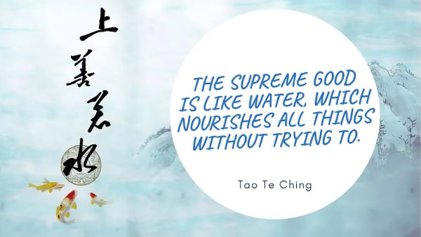
（12）星空之城，你是否只为我一人闪耀？星空之城，世间有太多不可明了。谁知道，我感觉到你我初次拥抱时，所怀有的那些梦想，都已一一实现。
City of stars. Are you shining just for me? City of stars. There’s so much that I can’t see. Who knows. I felt it from the first embrace I shared with you. That now our dreams. They’ve finally come true.
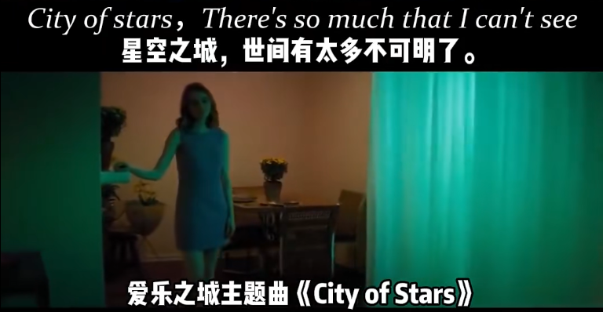
（13）拿不定主意时，照原路再走一次是明智之举。
When in doubt, I find retracing my steps to be a wise place to begin.
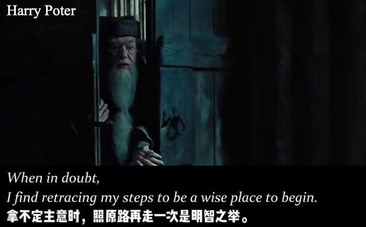
（14）我欣赏你的毅力，但有时谨慎才是勇敢的真谛。
I admire your persistence, but sometimes discretion is the better part of valour.
（15）为了别人改变，就是欺骗自己。
To change for others is to lie to yourself.
（18）两年时间不算什么，浪费它也是件超简单的事，但只需微小的行动，切实的付出和坚持，你能让这两年变得价值连城。
Two years is nothing and extremely easy to waste, but with small actions, substantial commitment and consistency, you can make it count, a lot.
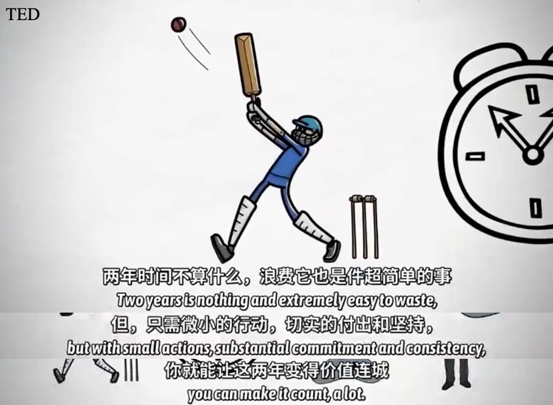
（19）所以我只是扮演好自己的角色，祈祷你会回心转意，但我却无法让你明白，有些事只有爱才可以解释。
So I’ll just play my part. Pray you’ll have a change of heart. But I can’t make you see it though. That’s something only love can do.
（20）你可以用尽一生去害怕未知的事物，去担心未来要走的路。但其实未来恰恰来自于我们当下做出的决定，无论是基于爱意还是恐惧。
You can spend your whole life imagining ghosts, worrying about the pathway to the future, but all there will ever be is what’s happening here, and the decisions we make in this moment, which are based in either love or fear.
（21）用温柔的方式，你也能撼动这个世界。
In a gentle way, you can shake the world.
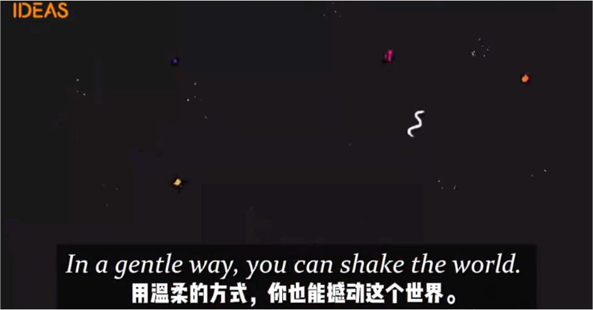
（22）礼节和传统都很好，但如果它们开始控制我们，它们也就失去用处了。
Manners and tradition are all very well, but once they start to control us, they’ve outlived their usefulness.
（25）这个圣诞我不再许愿，漂亮的玩具、精美的礼物变得毫无意义，因为有你在我身边，我就拥有了一切。
So I won’t ask for anything. No shiny toys or fancy things, Cause I’ve got everything I need. With you here next to me.
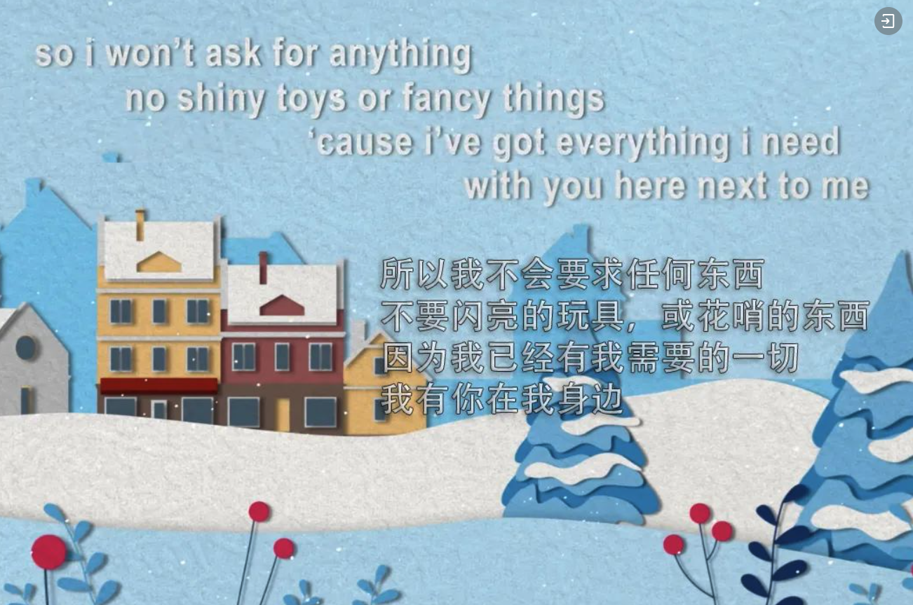
（26）太平盛世，环球同此凉热。
In a peaceful world young and old. Might share alike your warmth and cold!
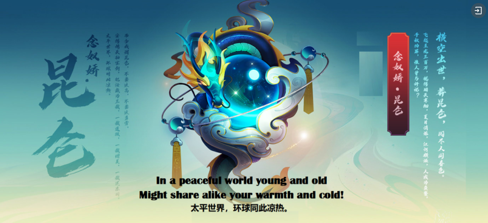
（27）有些鸟儿注定是关不住的，它们的羽毛太鲜亮了。
Some birds aren’t meant to be caged. Their feathers are just too bright.
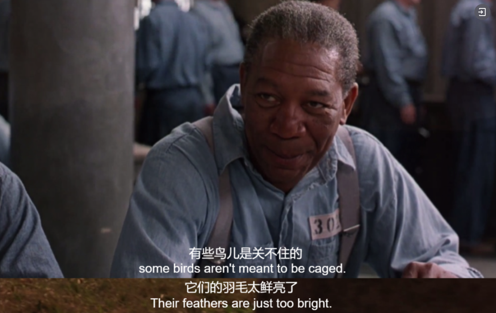
（28）在这个世上，办事情一旦偷懒就一定做不好。
In this world, you can either do things the easy way or the right way.
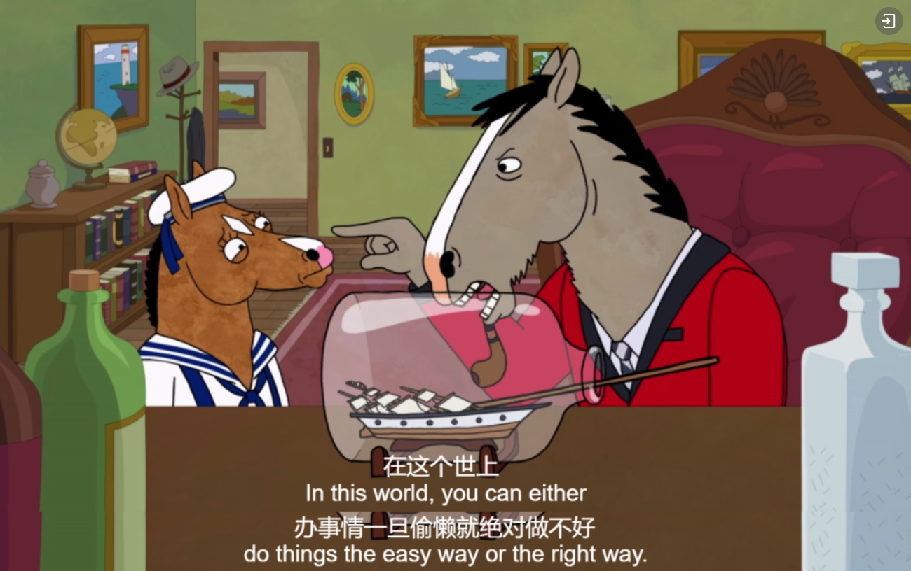
（29）你遇到了成千上万的人，没有一个能真正触动你心灵。直到遇见那么一个人，于是你的人生都永远改变了。
You meet thousands of people, and none of them really touch you. And then you meet one person, ans your life is changed forever.
2024年1月
（2）你和我应该立下约定，将救赎带回来。有爱的地方，我会在你身边。
You and I must make a pact. We must bring salvation back. Where there is love, I’ll be there.
（3）我的一生被三种简单却又无比热烈的激情所控制：对爱的渴望，对知识的探索，和对人类苦难的难以抑制的怜悯。
There passions, simple but overwhelmingly strong, have governed my life: the longing for love, the search for knowledge, and unbearable pity for the suffering of mankind.
（4）世人都晓神仙好，惟有功名忘不了。古今将相今何方，荒家一堆草没了。
Their minds yearn to ascend, Yet fame still holds sway. Their glory fades through time, in tombs of somber gray.
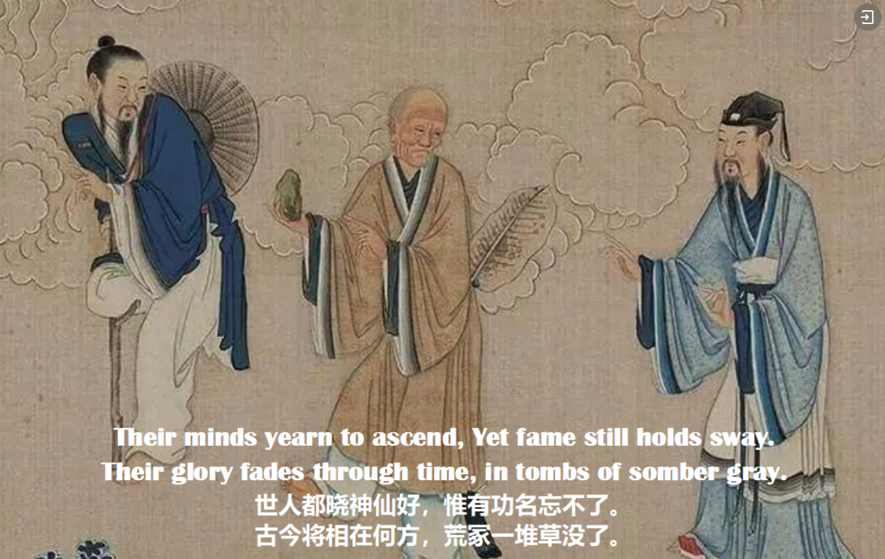
（5）欺负我们的人就不是朋友了。只有强大才能不被人欺，所以从现在起，我们就要奋发图强。
A friend who bullies us is no longer a friend. And since bullies only respond to strength, from now onward, I will be prepared to be much stronger.
（8）天赋是随机的，你可能会拥有它，但这意味着什么呢？但性格是可以观察到的，是可以见证的。品格是后天习得的，也是代代传承下来的。
Talent is random. You might have it, but what does it mean? But character is observed. It is witnessed. Character is taught and it’s passed down.
（9）我势不可挡，我已摆脱桎梏。我所向披靡，我战无不胜。我力有万钧，我永不漫灭。
I’m unstoppable. I’m a Porsche with no brakes. I’m invincible. Yeah, I win every single game. I’m powerful. I don’t need batteries to play.
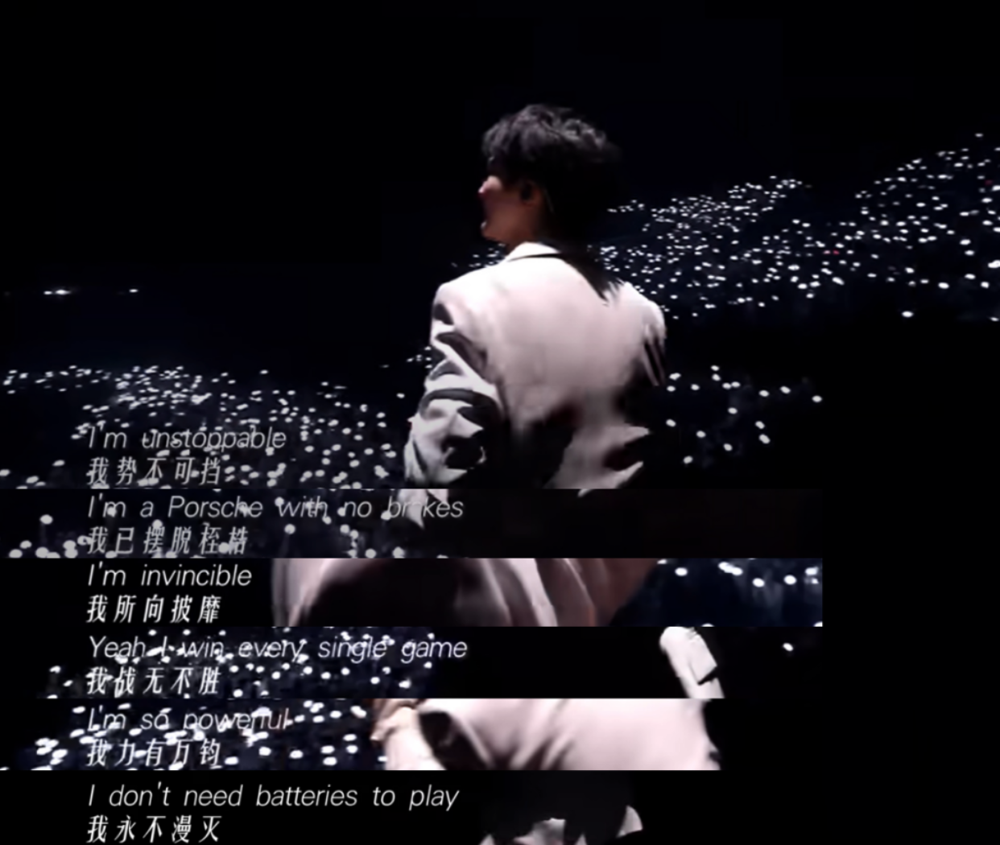
（10）你想成为哪类人，并不取决于你的能力，而是取决于你的选择。
It is not our abilities that show what we truly are. It is our choices.

（11）人爱者有力，爱人者勇。
Being deeply loved by someone gives you strength, while loving someone deeply gives you courage.
（12）幸福就是：知足。如果你对你的生活和你所做的事情感到满意，那么你会非常快乐、富足。
Happiness is one word: contentment. If you’re content with your life and what you’re doing, I think you’re then very very happy and very very rich.
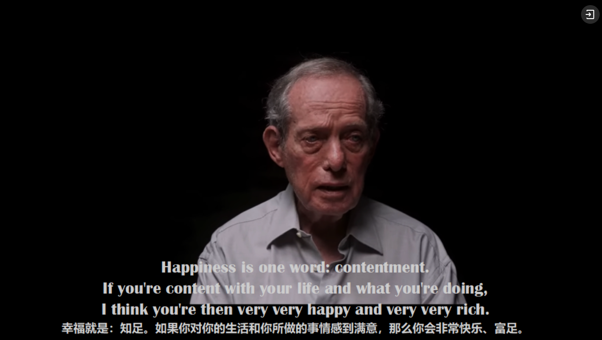
（15）觉得沮丧代表你活在过去；觉得焦虑说明你活在未来；平静泰然才证明你活在当下。
If you’re sad, then you mind is in the past. If you’re anxious, your mind will be in the future. But if you’re peaceful and if you’re still, your mind is in the present moment.
（16）我跟所有人说我还算熬的过去。在摇摇欲坠的天堂幻境中，我们之间没有界限。这是与你一起度过的心碎之夏。
It’s cool. That’s what I tell’em. No rules in breakable heaven. But ooh, Whoa oh. It’s a cruel summer With you.
（17）衡量我们生命意义的唯一方式，就是珍惜他人的生命。
The only way that we can measure the significance of our own lives is by valuing the lives of others.
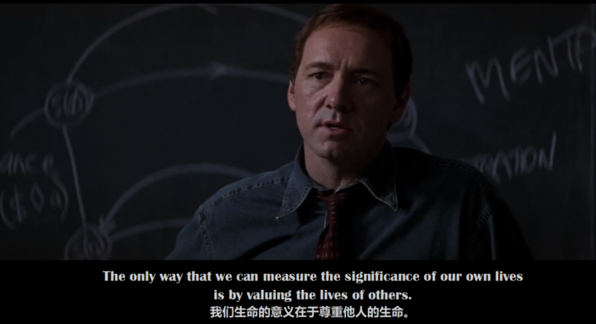
（18）责人者远，责己者半，不责者达。
The man who blames others has a long way in his joureney to go. The man who blames himself is halfway there. And the man who blames no one has already arrived.
（19）想和平共处的唯一方法，就是看他们是否准备好原谅。
The only way anyone can live in peace is if they’re prepared to forgive.
2024年2月
（23）元宵节是春节的最后一天，对于在外工作和求学的游子来说，他们即将惜别团聚，满怀乡思，再次踏上新一年的征程。
Lantern Festival is the last day of Chinese New Year celebrations. For those working and studying away from home, it is time to bid farewell to their families and set out a journey in a brand new year.
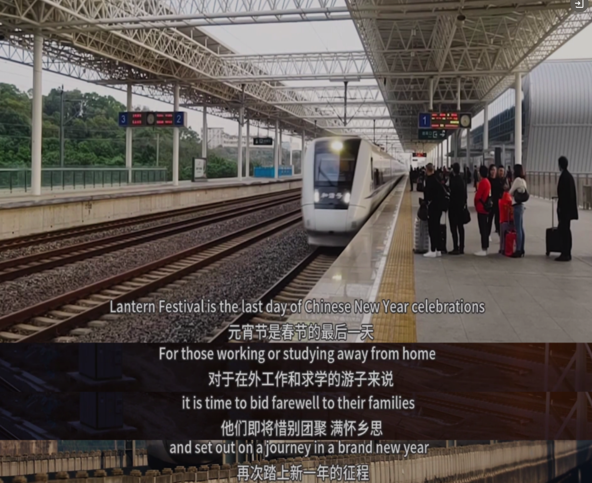
（26）即使是再小的善举，也有充足的力量能打动人心，照亮黑暗的日子
。我将以乐观和勇气面对这一年。
Even the smallest act of kindness has the power to touch hearts and brighten days. I plan to face this year with optimism and courage.